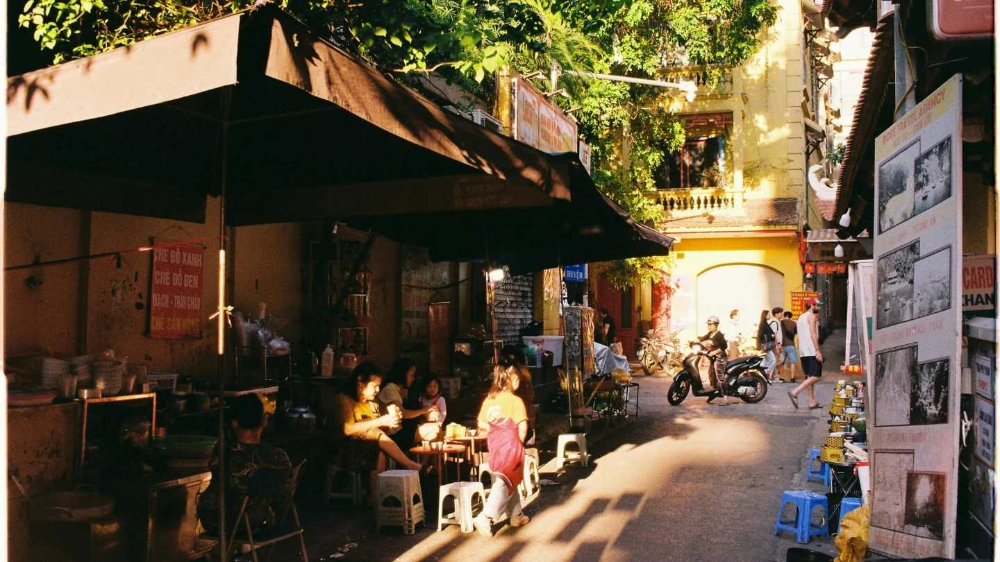

Về Lazi Voyage
Đi để hiểu.
Đọc để yêu.
Lazi Voyage chia sẻ những câu chuyện về du lịch, ẩm thực và văn hoá Việt Nam. Từ những chuyến đi, cùng tìm hiểu con người và đời sống ở mỗi vùng đất.

Mỗi hành trình là một cơ hội để hiểu thêm về Việt Nam.
Du lịch
Cẩm nang, gợi ý hành trình và kinh nghiệm để chuẩn bị cho những chuyến đi ở Việt Nam.
Khám pháGiới thiệu về Lazi Voyage
Lazi Voyage là một blog văn hóa Việt chuyên sâu, nơi những người đam mê khám phá và trân trọng giá trị Việt tìm thấy tiếng nói chung. Sứ mệnh của chúng tôi là mang đến cho độc giả một cái nhìn toàn diện và chân thực nhất về văn hóa Việt Nam qua từng điểm đến.
Khác với các blog du lịch thông thường, Lazivoyage không chỉ cung cấp những cẩm nang du lịch Việt Nam chi tiết, mà còn đi sâu vào từng nét đặc trưng văn hóa: từ ẩm thực địa phương, làng nghề truyền thống, lễ hội độc đáo cho đến kiến trúc cổ kính. Mỗi bài viết là một hành trình kể chuyện, giúp bạn không chỉ đi mà còn hiểu và cảm nhận được tinh hoa của đất nước.
Được sáng lập bởi những người yêu Việt Nam, chúng tôi tin rằng du lịch là cách tốt nhất để kết nối với văn hóa và con người. Lazivoyage.com là cẩm nang đáng tin cậy dành cho những ai muốn trải nghiệm Việt Nam một cách trọn vẹn, chân thực và sâu sắc.